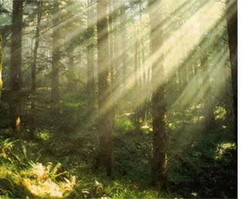
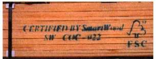
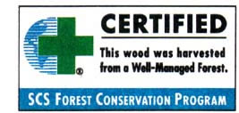

In many ways, worldwide forests now provide as much valuable shelter to us collectively when left standing as when cut to build our individual homes. After all, forests breathe. Big old-growth trees, whether in temperate or tropical forests, provide our hedge against global warming by absorbing and storing carbon dioxide, the principal greenhouse gas, and pumping oxygen into Earth's atmosphere. As the planet's biodiversity diminishes at an alarming rate, policy makers, and even loggers, have begun to join the ranks of conservationists who believe that selective cutting is preferable to clear-cutting.
In the last 45 years alone, about one fifth of all forests worldwide have disappeared, reports the Worldwatch Institute As of last year, more than 100/6 of the world's known tree species faced extinction, according to the World Conservation Union's "World List of Threatened Trees." In the United States, 95% of our original, old-growth forests have been logged. And, though we account for only 5% of the world's population, U.S. citizens consume 17% of global timber products.
While it is obvious that clear-cutting must be stopped, things have reached the point where the woodcutter can no longer be left to conserve that tree; the woodworker must begin to take responsibility, as well. Just as our hunger for wood has helped deplete this precious resource, consumer demand can now help support
Sound forest conservation practices. We can do this by choosing wood that's labeled with a "green" certification mark.
How does this work? To be certified, companies must show that their wood was not clear-cut, but instead harvested using sound forestry-management practices-including selective logging that permits regeneration of the forest, protection of wildlife habitat and biodiversity, and support of indigenous communities.
During the past five years, ecologically certified woods have made a strong entry into the market, thanks to consumer demand. In 1997, EcoTimber, a wood supplier in San Francisco, told the Wall Street Journal that its sales of environmentally certified wood had increased fourfold that year and, at $2 million, accounted for two thirds of its business. Certified wood is now so widely available, it's even carried by Home Depot.
A wide variety of "green" wood is available, in sizes appropriate for any kind of project, from a simple bookshelf to a custom stairway, to flooring, walls, and beams. Species available include redwood, Douglas fir and madrone, black cherry and red oak, and even some tropical woods such as rosewood and purpleheart.
In addition, eco-certified wood is proving to be highly affordable. "In general, certified wood products don't cost more than conventional-there's no "greets Premium," says Stacy Brawn of the Forest Stewardship Council (FSC), a watchdog accreditation program that, in addition to certifying forestry companies, approves other certifiers, such as the Rainforest Alliance's Smart Wood project and Scientific Certification Systems, which dispense FSC's seal in addition to their own.
Currently, about 1% of the world's forests, or about 10 million hectares (24.7 million acres) are under FSC certification. Recent additions include the million-acre Seven Islands Land Company in Maine.
A word of warning: don't rely on unsubstantiated claims that a wood is "sustainable," a vague and widely misused term. For instance, Tchibo stores in Germany recently admitted that they had falsely labeled their teak furniture as made with "sustainable" wood.
Instead, look for one of the specific, reliable labels listed at the end of this article. And be aware that the label adheres only to a particular company's practices, not to a type of tree; just because one producer's Douglas fir is certified doesn't mean the whole species is safe.
If you have any doubts, you can always call FSC (see "Where to Find Good Wood,") to check a label's authenticity (the FSC's label has been misappropriated at times.)
Another option for the woodworker with an ecological conscience is recycled wood. Americans throw away about 12 million tons of wood a year. That's enough to frame a house for each and every one of us, the Center for Neighborhood Technology reports.
At used-lumber yards or from salvage or demolition contractors, usually listed in the Yellow Pages, you can get old lumber much more cheaply than freshly cut. Also, because it's been seasoned, salvaged wood is usually denser and dryer than new, notes Kathy Stein in Beyond Recycling (Clear Light Publishers, 1997).
A few things to keep in mind: old lumber may not be appropriate for structural uses, and "the majority of used lumber has not been graded, so it cannot be used for projects that mist be permitted and inspected," cautions Stein. Suggested uses include residential decks, paneling, cabinets -cr, furniture.
Take care, too, to wear goggles when sawing or planing used lumber, as it might contain hidden nails and other pieces of metal.
Finally, try not to waste wood yourself--though, like most good craftspeople, you probably already don't.
•To find certified timber in your area, contact:
•The Certified Forest Products Council, 888-737-3877
•Forest Stewardship Council, (802) 294-6257
•Scientific Certification Systems, (510) 832-1415 T
•Rainforest Alliance's Smart Wood program, which also has a Rediscovered Wood program for used lumber, (802) 434-5491
•For a list of used-lumber dealers in your area, call the Used Building Materials Association (877) 221-8262
Mindy Pennybacker is the editor of the Green Guide newsletter published by Mothers & Others for a Livable Planet, a national nonprofit advocacy group dedicated to teaching consumers how to shop `green. " You can reach M&O at 888-ECO-IIVFO, or on the Web at www. mothers.org.
|
 PHOTO: THOMAS/FPG Shop green: Whether building a deck, cabinetry, or furniture, choose wood that bears a recognized, eco-certified seal of approval. |
 COURTESY OF SMARTWOOD |
 |